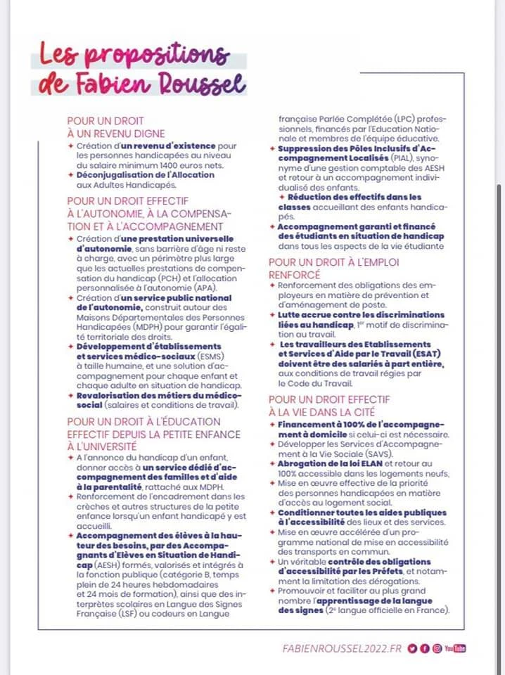

Publication d’archives
Avec Fabien Roussel et le programme des Jours Heureux, des propositions concrètes pour les personnes en…
Date indiquée par Facebook · 4 avril 2022
Texte conservé avec la publication
Contexte du dossier
En juin 2023, la page renvoie à une pétition du PCF sur l’inflation et les salaires. La destination du lien permet d’identifier l’objet de la pétition. En juin 2024, la page relaie « Privés d’emploi et privés d’indemnités chômage », signé par le sénateur Fabien Gay. C’est la référence d’un texte sur l’indemnisation, dont la légende Facebook ne reproduit pas les propositions. En avril 2022, un autre support avait présenté le volet handicap du programme « Les Jours heureux ». Les publications portent sur trois questions distinctes, les revenus d’activité, la perte d’emploi et l’accès aux droits des personnes en situation de handicap.

Sources
Archive rouge · export Facebook · AR-0002-FB-01908
À lire aussi · Lien de la pétition